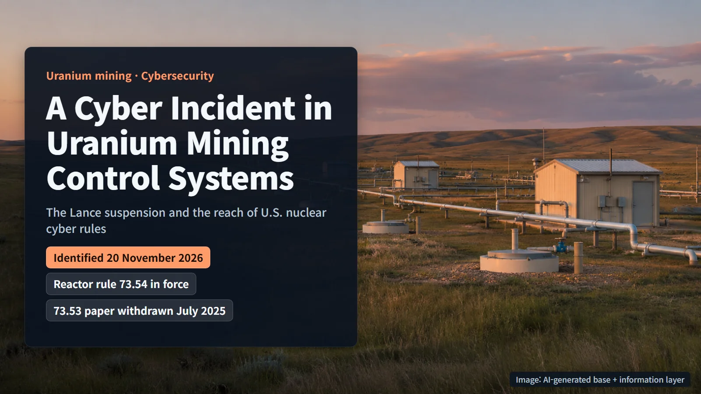
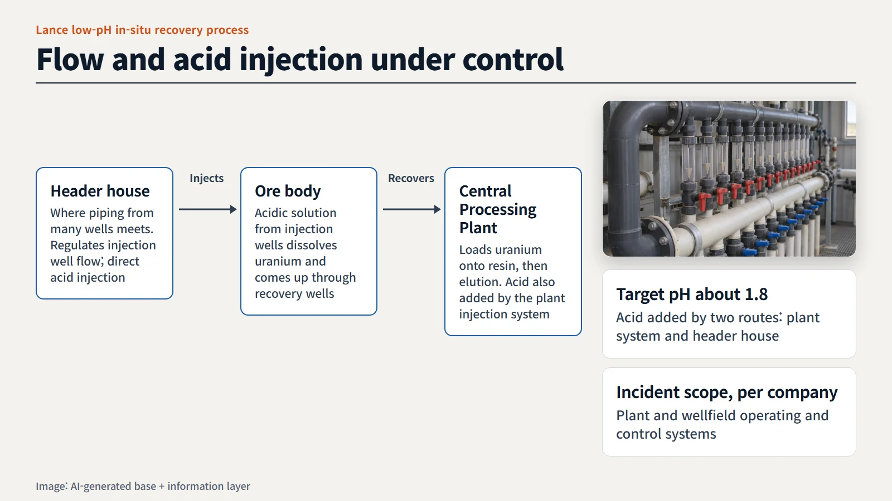
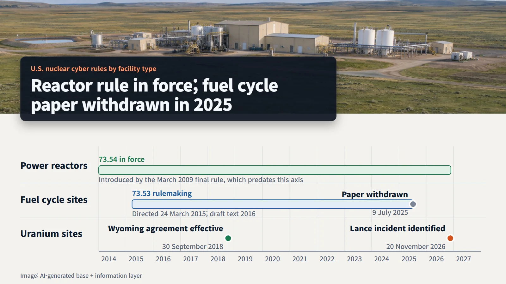
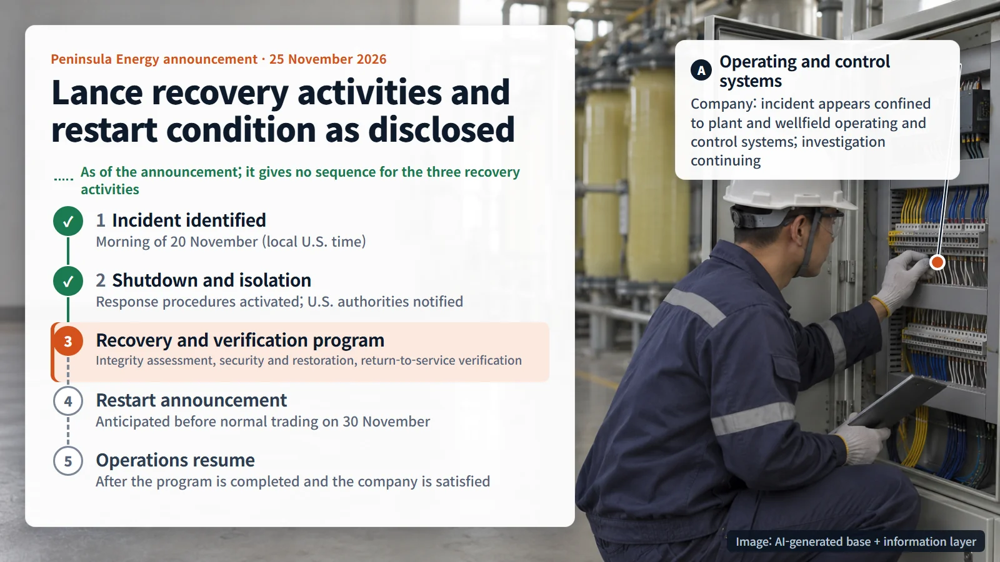

Fuel Cycle · Cybersecurity
A Cyber Incident in Uranium Mining Control Systems: The Lance Suspension and the Reach of U.S. Nuclear Cyber Rules
Reactor rule 73.54 is in force, the fuel cycle rule paper was withdrawn in July 2025, and the draft's scope list has no entry for in-situ recovery
When the computers that run a uranium mine's valves and pumps are compromised, it is natural to ask which rules apply. On 20 November 2026 a cybersecurity incident was identified in the plant and wellfield operating and control systems of the Lance uranium project in Wyoming, and the operator temporarily shut the site down. The power reactor cybersecurity rule, 10 CFR 73.54, is in force; the rulemaking paper for fuel cycle facilities was withdrawn in July 2025; and the list of facilities covered by that draft has no entry for in-situ recovery sites. That matters to fuel-buying utilities and regulators.

The Lance Incident and the Company's Disclosures
Lance is a uranium project operated by Australia's Peninsula Energy through its U.S. subsidiary, Strata Energy. Strata Energy identified the incident on the morning of 20 November (local U.S. time). In its 25 November announcement to the Australian Securities Exchange (ASX), the company said it had activated its response procedures, temporarily shut down operations at Lance, isolated the affected systems and notified relevant U.S. authorities. Based on investigations to date, the company says the incident appears to be confined to the operating and control systems, and the investigation is continuing. The attacker, the method and the names of the authorities notified are undisclosed.
According to the company's quarterly report, Lance drummed 15,588 pounds in the September 2026 quarter, and the company's stated 2027 production guidance is 500,000 to 600,000 pounds of triuranium octoxide (U3O8). Dividing the lower bound of 500,000 pounds across 4 quarters gives 125,000 pounds per quarter, and 15,588 ÷ 125,000 works out to about 12%. Lance was mid ramp-up when the incident occurred.
The Process That Operating and Control Systems Regulate in In-Situ Recovery
In-situ recovery (ISR) dissolves uranium by circulating a solution through the underground ore body. At Lance an acidic solution goes down injection wells, dissolves uranium in the ore body, is pumped back up through recovery wells and is loaded onto resin in the surface plant. It works like managing water paths through a large underground filter bed.
Those water paths are managed at header houses, where the piping from many wells comes together. Lance regulates injection well flow rates header house by header house and sends the uranium-rich solution from the recovery wells to the Central Processing Plant (CPP). The operating and control systems monitor and regulate flow and acid injection at the header houses and the resin loading and elution stages at the Central Processing Plant. To lower wellfield pH toward its target of about 1.8, the company adds acid by two routes: the plant injection system at the CPP and direct injection at the header house. Flow and pH set the conditions under which uranium dissolves, so the incident hit the systems that set production conditions.

Reactor Cyber Rules 73.54 and 73.77 and the Withdrawn 73.53 Paper
In its March 2009 final rule on power reactor security, the U.S. Nuclear Regulatory Commission (NRC) placed the cyber requirements in a stand-alone section, 10 CFR 73.54. It requires power reactor licensees to protect safety, security and emergency preparedness functions against cyber attacks up to the design basis threat (DBT), the reference attack a facility must withstand. Section 73.77 sets notification deadlines by type of event: within 1 hour of discovering an attack that adversely affected those functions; within 4 hours of discovering an attack that could have done so or an attack by someone with inside access, or of notifying another government agency of a related event; and within 8 hours of receiving or collecting information that may indicate preparation for an attack.
Fuel cycle facilities, which convert and enrich uranium and fabricate fuel, carried two obligations as described in the NRC's 2016 regulatory basis document: a generic provision in the 2002-2003 Interim Compensatory Measures (ICM) security orders to evaluate and address cyber vulnerabilities, and the duty of Category I facilities, which handle formula quantities of strategic special nuclear material, to design their protection systems against a design basis threat that includes a cyber attack. On 24 March 2015 the Commission directed the staff to proceed directly with a dedicated rulemaking, 73.53, and the 2016 draft rule text set its scope as special nuclear material facilities subject to 10 CFR 70.60 and uranium hexafluoride conversion and deconversion facilities licensed under Part 40. On 9 July 2025 the Commission approved withdrawal of the proposed rule paper (SECY-17-0099) and asked the staff for a path-forward recommendation.
Placing the March 2009 reactor rule, the 9 July 2025 withdrawal of the fuel cycle paper and the 20 November 2026 Lance incident on one time axis brings out the differences between facility types.

| Facility type | Governing rule | Current status |
|---|---|---|
| Power reactors | 10 CFR 73.54, 73.77 | In force. Notification within 1 hour, 4 hours or 8 hours by event type |
| Fuel cycle facilities (including Category I) | 2002-2003 ICM security orders, 10 CFR 73.1 and 73.20 | Existing obligations (2016 document) |
| 70.60 facilities; uranium hexafluoride conversion and deconversion facilities | Proposed 10 CFR 73.53 | Paper withdrawn and path-forward recommendation requested in July 2025 (no submission deadline stated); later submission unconfirmed |
| Uranium in-situ recovery and milling (Wyoming) | 10 CFR 20.1801 and 20.1802 (state-adopted) | Material security and control requirements |
(Source: reconstructed from the cited 10 CFR sections, NRC rulemaking documents and the Wyoming agreement notices)
The list of facilities covered by the 73.53 draft has no entry for uranium in-situ recovery or milling, and the notification duty in 73.77 is placed on licensees subject to 73.54.
Disclosed Recovery Activities and the Timing of the Restart Announcement
The company says its recovery program is focused on assessing the integrity of the affected systems, implementing security and restoration measures, and verifying that the plant operating and control systems can be safely returned to service. It lists these three activities without a sequence. The company says operations stay suspended until the recovery and verification program is completed and the company, taking into account its advisers' advice, is satisfied that they can safely resume. Set side by side, the initial measures, recovery activities and restart condition in the 25 November announcement show that Lance is now in the recovery and verification program stage. Whether any separate regulatory approval or condition applies could not be confirmed from the documents reviewed.

In its 25 November announcement, the company said it anticipates releasing a follow-up announcement on the estimated timing of the operational restart and any impact on production guidance before the start of normal trading on 30 November. It will reassess its 2027 production guidance once operations resume. On the rule side, the Commission's July 2025 memo asked the staff for a path-forward recommendation on 73.53 and stated no submission deadline. Whether a recommendation has since been submitted, and what it says, could not be confirmed from the documents reviewed.